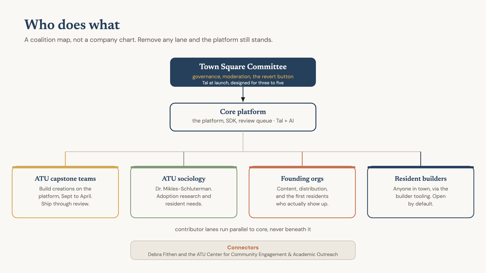

The coalition
The plan starts in one room in Russellville.
A set of real names, a university already looking for projects, and a calendar somebody else set.
Roughly a dozen community members sat down for the ATU CCEAO Community Problem-Solving Workshop, convened by the ATU Center for Community Engagement and Academic Outreach and sponsored by AR-NETWORK.
Going around the room, people named the problems Town Square exists to solve. That happened before Town Square came up.
ATU’s Computing Sciences program was in that same room, looking for real projects to hand its senior capstone teams.
Who was in the room
-
Convener
Debra Fithen
Project Coordinator
ATU Center for Community Engagement & Academic Outreach
-
Computing Sciences
Becky Cunningham
Capstone faculty
Arkansas Tech University
-
Computing Sciences
Dr. Robin Ghosh
Capstone faculty
Arkansas Tech University
-
Sociology
Dr. Julie Mikles-Schluterman
Faculty
Arkansas Tech University
The organizations present, which is the seed coalition
- Arkansas Tech University
- Co-Create Innovation Hub
- Russellville Housing Authority
- Main Street Russellville
- Humphrey Funeral Service
- Arkansas Advanced Energy Association
- Emerging Hope Therapy
- Local independent professionals
Those organizations sort into four contributor lanes. None of them sits underneath the platform, and that is deliberate.

The idea the whole thing turns on
Students build creations on Town Square, never Town Square itself.
One constraint, and it buys four things at once.
-
01
A structural non-blocking guarantee
Creations are sandboxed, so a team that stalls cannot slow the platform down. That is an architectural property, not a promise about student quality.
-
02
Free accountability
“Did the team deliver” has a binary, dated answer: did their exact version pass review. The academic deadline and the platform’s gate are the same event, and faculty get a grading artifact out of it.
-
03
Thesis validation
Town Square’s whole bet is that residents will build on it. Student teams building on it is the first real evidence, and it arrives with a public showcase in April.
-
04
Nothing is orphaned
ATU’s own partner guide is explicit that students and faculty own nothing once the course ends. Every project here runs on infrastructure that is already maintained, so there is no abandoned system in April.

The calendar, which ATU sets
September to April, ending in front of the town.
-
Late Aug to early Sept 2026
Student teams are formed and projects are selected.
-
By mid-September
Selected project partners are contacted.
-
September to April
Teams work with their partner to plan, design, and develop.
-
April 2027
Final delivery, and a public showcase.
Nothing here is committed. ATU has agreed to nothing, and submitting a project does not mean a team picks it up. What exists today is an open door and the conversation that started this.